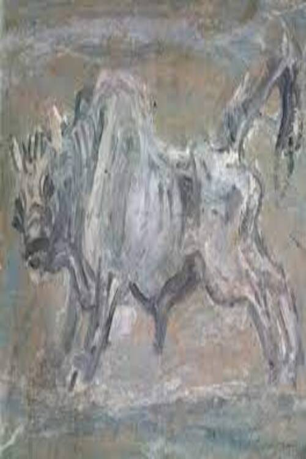

이중섭(덤벼드는 소)

이중섭 (1916-1956),「덤벼드는 소」, 1950 년대, 서양_한국현대, 유화, 종이에 유채, 29 cm x 40.3 cm.
작품설명:
화가 이중섭을 말할때 ' 소 '를 말하지 않고
이중섭을 말할수 없다. 강제로 나라를 빼앗긴 민족의 설움을
소를 통해 고스란히 전하였다. 그의 소는 싸움에서 결코 질수 없는 싸움소
강인함의 상징인 ' 황소 ' ' 덤벼드는 소 '등을 통하여 그가 지닌 울분을 표현하고자 했다.
' 소 '의 눈빛을 통해서 강열한 전투적 이미지와 설움이 교차된 서글픈 감정을 느낀다.
이러한 그의 그림에는 '분노'와 '격정'이 있고 내면에는 또다른 그림을 통해서
접할수 있겠지만 더할수 없는 가족애를 느끼게 한다. 경남 통영 시절에 제작된
황소는 이중섭 생애 전반에 걸쳐 주제로 등장하는 가족을 일본으로 보내고
비극적 현실에 대한 자신의 실체를 반영한 것이다.
가난과 이산의 아픔을, 억제할수 없는 분노와 좌절을,울부짖으며
내뱉는 황소의 모습으로 승화시켜 그림에 담았다.
돌아가기
자료조사: 장현우